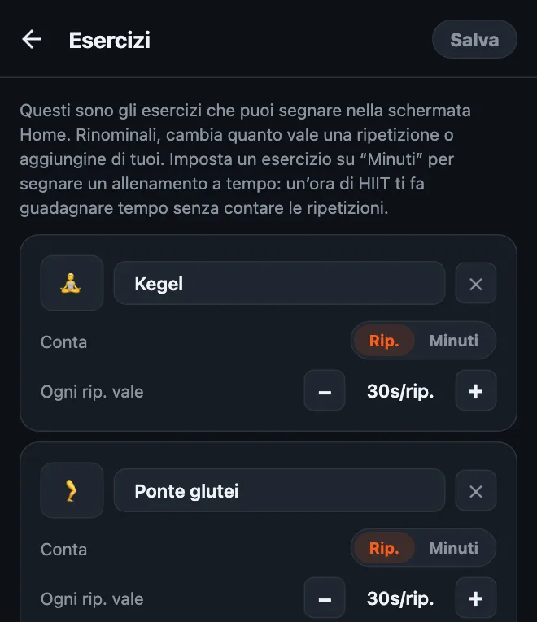
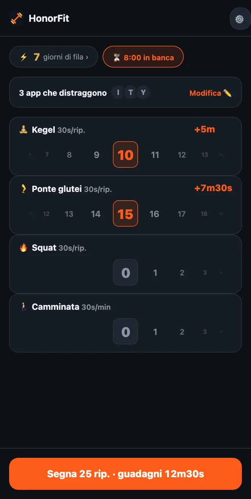

Fai esercizi di Kegel per sbloccare il telefono
Ciao a tutti! Ho creato HonorFit perché volevo un po’ di flessioni tra me e Instagram, senza dover appoggiare il telefono da qualche parte perché una fotocamera le contasse (farlo in una stazione di servizio non è stato il mio momento migliore, ahah). Fai le ripetizioni, le segni tu e le tue app si sbloccano.
Però le flessioni non fanno per tutti. E una delle cose che si sposano meglio con quest’idea non sono affatto le flessioni: sono gli esercizi di Kegel e il ponte glutei. Ti spiego perché, e come configurarli.
Perché i Kegel vanno così d’accordo con il sistema sulla parola
Nessuno può vedere un Kegel. Non chi ti siede accanto sull’autobus, non i colleghi, e di sicuro non la fotocamera di un telefono. Un’app che conta le ripetizioni con la fotocamera, letteralmente, non può contarli.
HonorFit non ci prova nemmeno. Funziona sulla parola (in inglese): li fai, giri la rotella fino al numero che hai fatto, fatto. Così puoi guadagnarti il tuo tempo su TikTok durante una riunione, in fila al supermercato o sul divano, e nessuno se ne accorge.
E risolve la cosa che dicono tutti dei Kegel: “Lo so che dovrei farli, è che me ne dimentico”. Se prendi in mano il telefono un sacco di volte al giorno (nessun giudizio, anch’io), adesso ognuna di quelle volte è un promemoria.
Il ponte glutei non è invisibile, ma è facile da fare per terra o anche a letto, non serve attrezzatura e si abbina benissimo ai Kegel.
Come configurarlo
Dalla versione 1.15.0 è gratis: senza Pro puoi aggiungere fino a 3 esercizi tuoi, ed Esercizi di Kegel e Ponte glutei sono entrambi suggerimenti da un tocco. (Pro, 3 $ al mese oppure 19,99 $ una tantum negli Stati Uniti, li rende illimitati; il prezzo cambia in base al paese e alla valuta, e lo store ti mostra il tuo.) Ecco come:
- Tocca l’ingranaggio nella schermata principale, poi la scheda Esercizi.
- Tocca il suggerimento Esercizi di Kegel, poi Ponte glutei. Non devi scrivere niente, e hanno già la loro emoji: 💎 per i Kegel e, sì, 🍑 per il ponte.
- Imposta Ogni rip. vale con i pulsanti −/+ (i miei consigli sono qui sotto).
- Togli con la ✕ quelli che non userai (le trazioni, magari?) e tocca Salva.

La guida completa all’editor, allenamenti a tempo compresi, è in come personalizzare i tuoi esercizi in HonorFit.
Quanto tempo schermo dovrebbe valere ogni ripetizione?
Io partirei da qui:
| Esercizio | Ogni ripetizione vale | Una serie tipica vale |
|---|---|---|
| 💎 Kegel | 30 secondi | 10 Kegel = 5 minuti |
| 🍑 Ponte glutei | 30 secondi | 15 ponti = 7m30s |
| 🚶 Camminata (a tempo) | 30 secondi al minuto | camminata di 20 minuti = 10 minuti |
Quindi una serie di 10 Kegel più 15 ponti ti dà circa 12 minuti e mezzo. Poi aggiusta da lì. Se accumuli tempo troppo facilmente, abbassa i valori. Se ti accorgi di segnare ripetizioni che non hai fatto, il prezzo è troppo alto, quindi abbassalo.

Una cosa sui Kegel: di più non vuol dire meglio. Siti di salute come MedlinePlus e Cleveland Clinic (entrambi in inglese) parlano in genere di serie da circa 10, qualche volta al giorno, e dicono che esagerare può lasciare i muscoli troppo contratti. Quindi, per favore, non trasformarlo in 100 Kegel per un’ora di YouTube! Per questo darei loro un buon valore a ripetizione e lascerei a ponte glutei, squat o una camminata il grosso del lavoro.
I movimenti di base
Sono uno sviluppatore di app, non un personal trainer né un fisioterapista, quindi questa è solo l’idea generale. I link qui sopra hanno le istruzioni fatte bene.
- Kegel: contrai i muscoli che useresti per trattenere la pipì, tieni per qualche secondo, poi rilassa del tutto per qualche secondo. Questa è una ripetizione. Continua a respirare e cerca di non contrarre pancia, cosce o glutei. (Interrompere la pipì a metà serve a trovare quei muscoli una volta, non è qualcosa da fare regolarmente.)
- Ponte glutei: sdraiati sulla schiena con le ginocchia piegate e i piedi appoggiati a terra. Contrai i glutei e solleva il bacino finché il corpo forma una linea retta dalle spalle alle ginocchia, fermati un attimo e scendi piano. Questa è una ripetizione. A qualcuno piace aggiungere un Kegel in alto.
Se sei incinta, nel post-parto, hai dolore pelvico o i Kegel ti fanno male, chiedi prima al tuo medico o a un fisioterapista del pavimento pelvico. Può dirti cosa va bene per il tuo corpo, e a volte la risposta è “per ora niente Kegel”, e va benissimo così. Puoi configurare HonorFit con quello che ti consiglia al posto dei Kegel.
Qualche consiglio
- Tieni tre o quattro esercizi. Qualcosa come Kegel, Ponte glutei, Squat e Camminata copre i momenti da seduto, da sdraiato e in giro. Ognuno ha la sua rotella, quindi meno sono, più è facile.
- Usa un allenamento a tempo per i giorni in cui esci. Passa un esercizio su Minuti (o tocca il suggerimento Camminata o Yoga), così anche una camminata o una lezione ti fanno guadagnare tempo.
- Routine salvate (Pro, si attiva nelle Impostazioni) ti fa salvare fino a 3 combinazioni di ripetizioni, tipo “10 Kegel + 15 ponti”, e applicarne una con un solo tocco.
- Blocca una o due app, non tutto. Quella che ti mangia le serate.
Se nemmeno i Kegel fanno per te, ho scritto anche di qualche opzione a basso impatto da fare anche alla scrivania.
HonorFit Blocker è un’app gratuita per iPhone e Android che blocca le app. Funziona sulla parola: niente fotocamera, nulla esce dal tuo telefono. Kegel, ponte glutei e fino a 3 esercizi personalizzati sono gratis. Magari a qualcuno di voi piacerà!